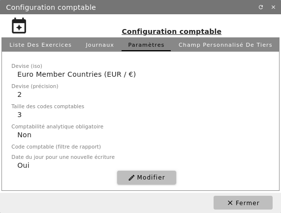
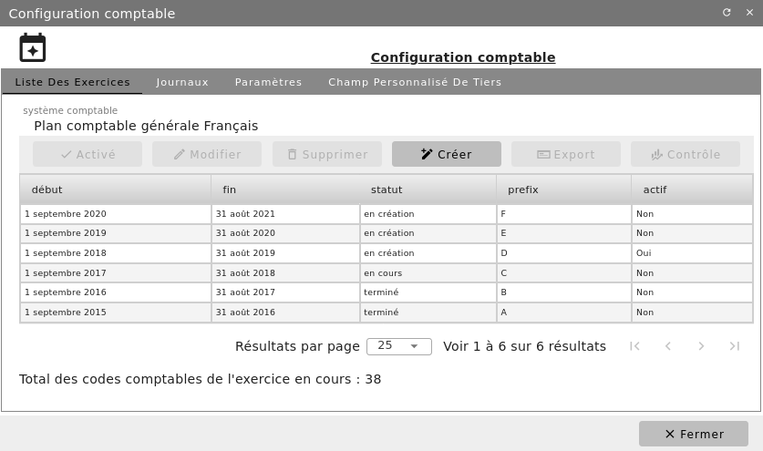
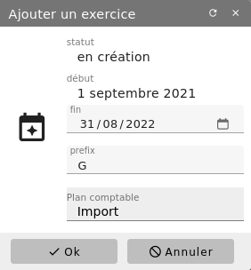
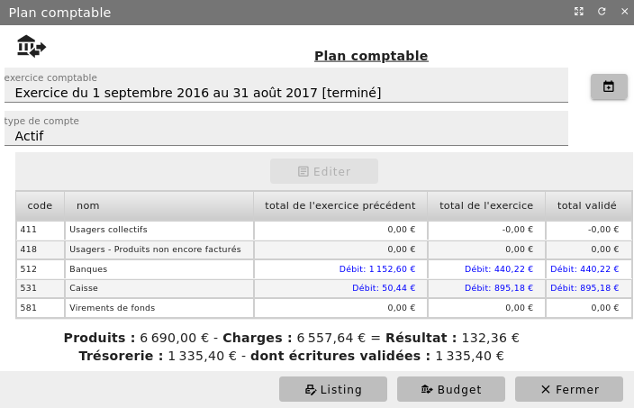
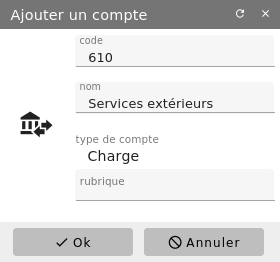
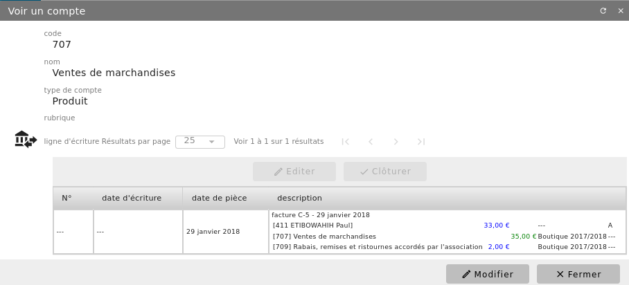

Exercice comptable¶
Paramétrages¶
Menu Administration/Modules (conf.)/Configuration comptable
Ouvrez l’onglet « Paramètres » et éditez-les avec le bouton « Modifier ». Paramétrez la devise et sa précision, la taille des codes comptables. Précisez aussi si vous avez l’intention ou non de mettre en place une comptabilité analytique.


Devise (iso) : Devise utilisée dans la comptabilité (au format international
Devise (précision) : Nombre de chiffre après la virgule de la devise
Taille des codes comptables : Taille minimum des code comptables, des zéro seront ajouté en plus éventuellement.
Comptabilité analytique obligatoire : Rend obligatoire l’utilisation de code analytique sur les lignes d’écritures de produit ou de charge.
Code comptable (filtre de rapport) : Début de code comptable utiliser pour prédéfinir des filtrages dans des rapports.
Date du jour pour une nouvelle écriture : Si non coché, rend la date d’écriture non rempli, obligeant à la saisir.
Création d’un exercice comptable¶
Lors de la mise en place de votre comptabilité sous Diacamma Syndic, vous aurez à spécifier le système comptable qui sera utilisé (ex. Plan comptable général français). Attention : une fois choisie, cette option ne sera plus modifiable.
Menu Administration/Modules (conf.)/Configuration comptable - Onglet « Liste d’exercices »


Vérifiez que le système comptable a été choisi et cliquez sur « + Créer » afin de renseigner les bornes du nouvel exercice.


Pour le premier exercice sous Diacamma Syndic, saisissez la date de début et la date de fin de l’exercice puis cliquez sur le bouton « OK ». Les exercices suivants ont comme date de début le lendemain de la date de clôture de l’exercice précédent et seule la date de fin est à saisir.
Notez que le logiciel associe à chaque exercice un répertoire de stockage du Gestionnaire de documents : certains documents officiels seront sauvegardés dans celui-ci. Le bouton « Contrôle » vous permet à tout moment de vérifier que vos documents officiels ont bien été générés.
Votre nouvel exercice figure maintenant dans la liste des exercices. Il est [en création]. Lorsque plusieurs exercices ont été créés, vous devez activer celui sur lequel vous souhaitez travailler par défaut, à l’aide du bouton « Activé ».
Onglet « Journaux » et Onglet « Champ personnalisé des tiers »
Depuis ce même écran de configuration, vous pouvez également modifier ou ajouter des journaux. Des champs personnalisés peuvent aussi être ajoutés à la fiche modèle de tiers comptable. Ceci peut être intéressant si vous voulez réaliser des recherches/filtrages sur des informations propres à votre fonctionnement.
Maintenant, vous devez fermer la fenêtre « Configuration comptable » et créer le plan comptable de votre structure.
Menu Comptabilité/Gestion comptable/Plan comptable


Avec le bouton « + Initiaux », générez automatiquement votre propre plan comptable général à partir du plan de comptes type fourni par le logiciel. Adaptez celui-ci aux besoins de votre structure avec les boutons « Ajouter » et « Supprimer ».
- Première tenue de comptabilité sous Diacammavous migrez sous Diacamma et avez des à-nouveaux à saisir.
Avec le bouton « + Initiaux », générez automatiquement votre propre plan comptable général à partir du plan de comptes type. Adaptez celui-ci aux besoins de votre structure avec les boutons « Ajouter » et « Supprimer ». Quittez l’écran Plan comptable et ouvrez le menu Comptabilité/Gestion comptable/Ecritures comptables. Saisissez vos soldes à-nouveaux en une seule écriture, en prenant bien soin de la contrôler, dans le journal « Report à nouveau ». Ceci fait, réouvrez le menu Comptabilité/Gestion comptable/Plan comptable.
- Exercice comptable suivantIl ne s’agit pas de votre premier exercice sous Diacamma.
Si ce n’est pas déjà réalisé, avec le bouton « Importer » (et non « Initiaux »), vous devez importer le plan comptable de l’exercice précédent. Contrôlez l’importation et mettez à jour, si besoin, le plan comptable de l’exercice. Suite à votre dernière assemblée générale, les excédents n-1 doivent être normalement ventilés avant clôture de l’exercice n-1. Si ce n’est pas le cas, vous devez passer cette écriture. Clôturez l’exercice n-1. Son état est maintenant [terminé]. Le nouvel exercice est toujours [en création]. Utilisez le bouton « Report à nouveau » afin que les soldes n-1 des comptes d’actif et de passif soient repris dans la comptabilité du nouvel exercice. Vous pouvez constater à l’écran que les soldes des comptes de bilan non soldés fin n-1 ont été repris. L’écriture correspondante au journal « Report à nouveau » est générée et validée automatiquement.
Afin d’achever l’ouverture de votre nouvel exercice, vous devez maintenant cliquez sur « Commencer ». Votre exercice est maintenant [en cours].
Création, modification et édition de comptes du plan comptable¶
Menu Comptabilité/Gestion comptable/Plan comptable
A tout moment vous pouvez ajouter un nouveau compte dans votre plan comptable.


Référez-vous à la règlementation de votre pays. Votre structure peut avoir l’obligation de respecter certaines obligations pour ce qui est de leur plan comptable.
Un compte peut être modifié, tant pour ce qui est de son numéro que de son intitulé. Les imputations (lignes d’écritures) qui lui sont associées seront automatiquement modifiées. Le changement n’est permis que si le nouveau compte relève de la même catégorie comptable (charge, produit…).
Lorsque vous consultez un compte (bouton « Editer » ou double-clic), les écritures associées au compte sont affichées.


Il vous est aussi possible de supprimer un compte du plan comptable à la condition qu’aucune écriture ne lui soit associée.
Remarque : Pour les comptes de charges et de produits, il vous est possible de définir une rubrique. Cette rubrique sera utilisé pour ordonnancer votre compte de résultat.
Clôture d’un exercice¶
En fin d’exercice comptable, celui-ci est clôturé. Cette opération, définitive, se réalise sous le contrôle de votre vérificateur aux comptes.
Au préalable, vous devez :
Passer vos écritures d’inventaire (charges à payer, produits à recevoir, créances douteuses…)
Contrôler que toutes les charges et les produits ont bien été imputés en comptabilité analytique
Vérifier que vos dépenses et vos recettes sont bien ventilées sur vos différentes catégories
Vérifier que toutes vos dépenses ont été ventilées sur les copropriétaires, pour ce qui est des copropriétés
Affecter vos excédents conformément aux délibérations de votre assemblée générale
Valider les écritures provisoires au brouillard
Lettrer les comptes de tiers
Créer l’exercice suivant si cela n’a pas été réalisé
Sauvegarder votre dossier
Menu Comptabilité/Gestion comptable/Plan comptable
Cliquez sur le bouton « Clôturer ».
La clôture a pour effet de :
Solder les comptes de gestion
Interdire tout ajout d’écriture
Arrêter les comptes de bilan et les comptes de tiers (copropriétaires, fournisseurs…)
Assurer qu’il ne pourra plus être apporté de modification à l’exercice clôturé
Remarques :
Tant qu’un exercice n’est pas clôturé, vous pouvez enregistrer des opérations sur celui-ci et le suivant
Certaines structures ont des règles de clôture spécifique (exemple les ASL): bien verifier votre règlementation comptable en la matière.